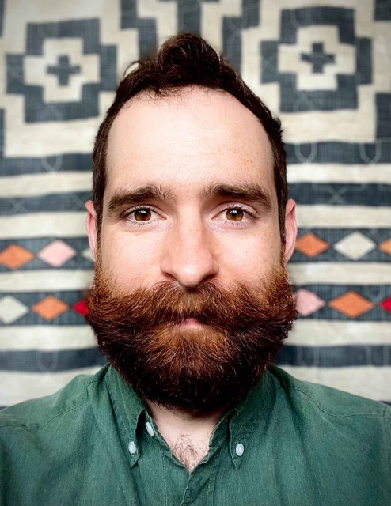

Eamon F.X. Byrne
Protein Engineer, Computational & Experimental
I am currently looking my next exciting career opportunity in protein engineering. Please get in touch via LinkedIn if you think I could be a good fit!

Eamon F.X. Byrne, DPhil. (Oxon)
Postdoc in Bioengineering, Stanford University
DPhil. in Structural Biology, Oxford University
BSc (Hons) in Biochemistry & Chemistry, Melbourne University
BA in History & Chinese Language, Melbourne University
more of me.
what excites me.
I am deeply excited by the idea of proteins as technology; truly nanoscale, biocompatible, programmable and reproducible machines. I want to harness the power of proteins to generate new technologies, both for reducing human suffering and for reducing our impact on the environment. This is what drives me.
I completed my PhD in structural biology in order to understand proteins at the most fundamental level. I completed my postdoc in protein engineering in order to learn how to make new, useful proteins.
Along the way, I’ve built a lot of skills. Here is a short list of my technical skillsets:
Computational: Python (Jupyter, Pandas, etc.), AlphaFold2, Rosetta Suite (Match, EnzymeDesign, RoseTTAFold2NA, etc.), SciKitLearn, PyTorch, TensorFlow2/Keras, PyMOL, crystallographic software.
Experimental: protein expression, protein purification, construct/plasmid design, biochemical analyses, tissue culture, x-ray crystallography, membrane proteins (GPCRs, ion channels), nanobodies (including binding kinetics), small molecule studies, flow cytometry, patch-clamp electrophysiology.
Managerial: project management, inclusive mentoring, dialogue facilitation, oral & written communication skills.
where I’ve been.
Between 2020-2023, I was Co-Chair of the SURPAS Long Range Planning Committee. This work culminated in the publication of the SURPAS Long Range Planning Report 2023.
Between 2018-2023, I have been a postdoc in the Deisseroth Lab at Stanford University. I engineered novel properties into light-activated ion channel proteins, such as ChRmine (Kishi … Byrne et al., Cell 2022) and KCR1 & 2 (Tajima, … Byrne et al., bioRxiv 2022). These new tools will be used to deepen our understanding of neural circuitry in the mammalian brain.
In 2019, I completed the Stanford Ignite entrepreneurship program at the Stanford Graduate School of Business and developed a venture pitch for machine-learning-enabled completion of electronic medical records.
I received my DPhil. from the University of Oxford in 2018 with Christian Siebold. I uncovered molecular mechanisms of Hedgehog signal transduction by solving several crystal structures of the G-protein coupled receptor (GPCR) Smoothened, complexed to different small molecules (Byrne et al., Nature 2016). We discovered that cholesterol is a Smoothened agonist (Luchetti… Byrne et al., eLife 2016) and that multiple ligand binding sites regulate Smoothened (Byrne et al., Curr Opin Cell Biol. 2018).
As an undergrad, I worked with Matthew Call and Melissa Call at the Walter & Eliza Hall Institute for Medical Research (WEHI) in Melbourne, Australia, to reveal the transmembrane determinants of ligand recognition for the E3 ubiquitin ligase MARCH9 (Tan, Byrne et al., J Biol Chem. 2019).
I am committed to justice, equity, diversity and inclusion work. I am a co-facilitator of the CCC&AOP program at Stanford. In my free time, I love going rock climbing. Ask me about it!